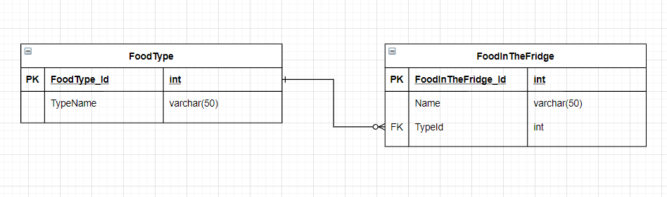

×
Fridge ERD

ERD Description
Table FoodType
- Descriptions of what the table means and how it's functionally used (in the UI, etc.)
FoodType tabel sisaldab kahte veergu: Id ja TypeName. Tabel FoodType sisaldab ainult andmeid toitude tüüpide kohta.
- Descriptions of what each attribute means
Id on tabeli FoodType peamine võti ja ta on int tüüpi atribuut, mis võtab ainult täisarvulisi sisendeid. Sisend ei tohi olla tühi.
TypeName on varchar tüüpi atribuut, mis võtab kuni 50 märgi suurust sisendit. Antud tabelis on ta toidu tüübi nimi.
- Explanations of the relationships (foreign keys) from this table to others, and vice-versa
Tabel FoodType ei sisalda mingeid võõrvõtmeid, aga tema Id on võõrvõti tabelile FoodInTheFridge.
Tabeli FoodType tüüp võib olla sama mitmel erineval toidul külmkapis ja võib olla ka mitteühelgi toidu tüüp külmkapis.
Table FoodInTheFridge
- Descriptions of what the table means and how it's functionally used (in the UI, etc.)
FoodInTheFridge tabel sisaldab kolme veergu: Id, Name ja TypeID. Tabel FoodInTheFridge sisaldab andmeid sellest, milliseid toitusid külmkapis hetkel hoitakse.
FoodInTheFridge tabel kasutab FoodType tabelit, et teada saada millist tüüpi on külmkapis olev toit.
- Descriptions of what each attribute means
Id on tabeli FoodInTheFridge peamine võti ja ta on int tüüpi atribuut, mis võtab ainult täisarvulisi sisendeid. Sisend ei tohi olla tühi.
Name on varchar tüüpi atribuut, mis võtab kuni 50 märgi suurust sisendit. Antud tabelis on ta toidu nimi.
TypeId on int tüüpi atribuut ja FoodInTheFridge võõrvõti, mis viitab FoodType tabelile. Ta võtab ainult täisarvulisi sisendeid, mis on juba olemas FoodType tabelis.
- Explanations of the relationships (foreign keys) from this table to others, and vice-versa
Tabel FoodInTheFridge sisaldab võõrvõtit TypeId, mis viitab tabeli FoodType Id-le.
Tabeli FoodInTheFridge toit võib olla ainult ühte toidu tüüpi.